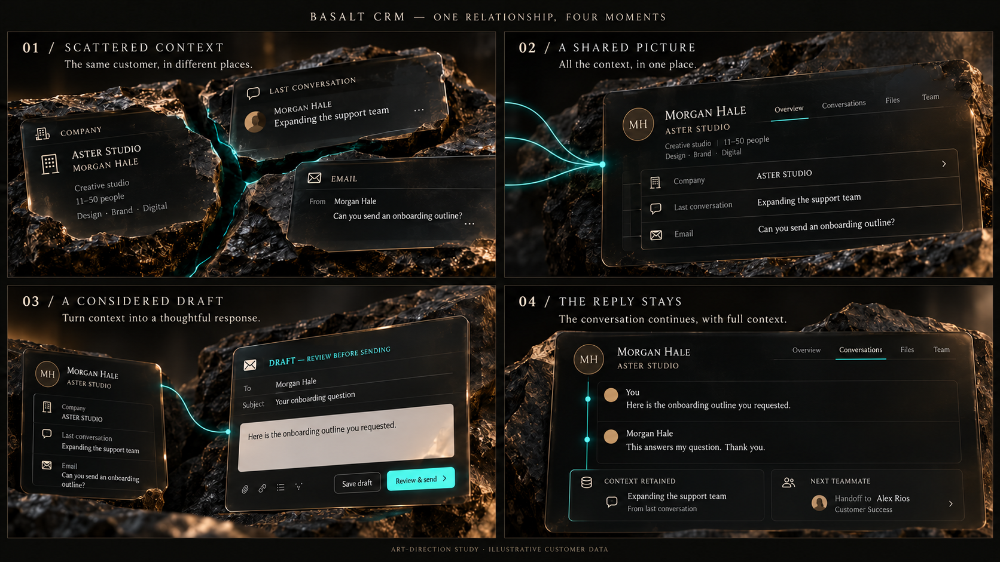

BASALT CRM / ART-DIRECTION PROPOSAL / 21 OCTOBER 2026
One conversation,
carried forward.
The same customer, the same source information, and a visible reason for every next step. The product record is the protagonist. Basalt, glass, warm light, and one restrained turquoise trace supply the material identity.
Concept study only. The board uses illustrative interface layouts and fictional customer data. It is not a capture of the current product or a promise that the browser can reproduce this render unchanged. No landing-page implementation was replaced in this pass.

Generated using the built-in imagegen tool. This is a reference for material, light, composition, and narrative. Production typography should remain native HTML, using the existing VOX wordmark and readable product UI.
The four shots
| CHAPTER | VISIBLE CAUSE AND EFFECT | CAMERA AND MOTION |
|---|
| 01 / Find the person | Morgan Hale at Aster Studio has already replied, “Can you send an onboarding outline?” Company context and the note about expanding the support team sit beside that source message. The same identity is readable in each fragment. | One short focus pull connects the incoming question to its sender. Source material stays readable; it never dissolves into decorative particles. |
| 02 / Understand the context | The exact source information settles into the existing profile, account, and outreach-history surfaces. No invented summary or new data appears. The question remains visible while its context becomes understandable. | The camera levels out. The three sources move into alignment around the same record, then hold. Basalt and glass support the composition. |
| 03 / Make a considered move | The prior reply and its recorded classification support a specific follow-up. A draft says, “Here is the onboarding outline you requested.” Source question and response are highlighted together. The draft holds for review; the animation never implies autonomous sending. | A restrained push follows the source-to-draft connection. Hold on the evidence and wording long enough to read. Any illustrative approval transition must be explicit. |
| 04 / Carry it forward | A subsequent reply says, “This answers my question. Thank you.” It joins the account's outreach history, with the original question and relevant context retained. An account task supplies the next step for the team. | Pull back into the complete working record. End on the product and the next useful action, not a landscape, logo explosion, or unrelated reveal. |
Ground it in the actual product
The existing DecisionIntelligenceReport.tsx states that Jev classifies SES and Gmail outreach replies. It should be shown interpreting the existing question, not predicting an unknown prospect's intentions. Any displayed classification or probability must come from an actual approved fixture evaluation.
Implementation references: lead BasicView.tsx and LeadTimeline.tsx; account OutreachTab.tsx with its actual reply_snippet, repliedAt, and status fields; DecisionIntelligenceReport.tsx; account TasksView.tsx. Use read-only sample data and existing component behavior. The concept's unified layout and handover tile are illustrative composition, not verified product features.
What the first implementation must prove
Four still frames must explain the situation, the reasoning, and the outcome without narration. Each scroll movement must expose information, connect evidence, or preserve continuity. A single CRM sequence should establish the material and motion quality before extending the direction to the other applications. Each later application needs its own work example and causal sequence.
Keep full-background composition, the existing VOX weights, actual shields, original footer, and readable mobile layout. Pause, reduced motion, and reverse scrolling remain part of the interaction contract. Surge retains the family's video treatment.
Generation record and final edit prompt
Built-in imagegen. The initial study is retained as study-v1.png; the revised review asset is storyboard.png. This prompt was applied to the initial study:
Edit this exact four-panel CRM art-direction storyboard. Preserve its composition, dark basalt, dark glass UI, warm grazing light, turquoise traces, typography, camera shots, dimensions, and existing headings. Make a narrowly targeted narrative/text correction so all four panels follow one causally coherent onboarding exchange, and fix the customer name everywhere. Customer is consistently 'MORGAN HALE' and company 'ASTER STUDIO'—in the first panel company card correct the garbled second line to 'MORGAN HALE'. In panel1 EMAIL source, show the customer's existing incoming reply text 'Can you send an onboarding outline?' in place of 'Asked about onboarding'. In panel2 the Email row retains exactly that same short question. In panel3 keep the explicit DRAFT / REVIEW BEFORE SENDING state, subject 'Your onboarding question', and change the draft body to 'Here is the onboarding outline you requested.' Keep that same sent sentence in the panel4 timeline. Replace panel4 customer reply 'Thursday works. Thank you.' with 'This answers my question. Thank you.' Keep context-retained note 'Expanding the support team'. Remove all invented timestamps and email addresses from UI, leaving uncluttered negative space; this is sample data. Preserve bottom 'ART-DIRECTION STUDY · ILLUSTRATIVE CUSTOMER DATA' label. No new objects, symbols, UI controls, or layout redesign. Goal is a polished consistent proposal, clearly not a shipped product screenshot.